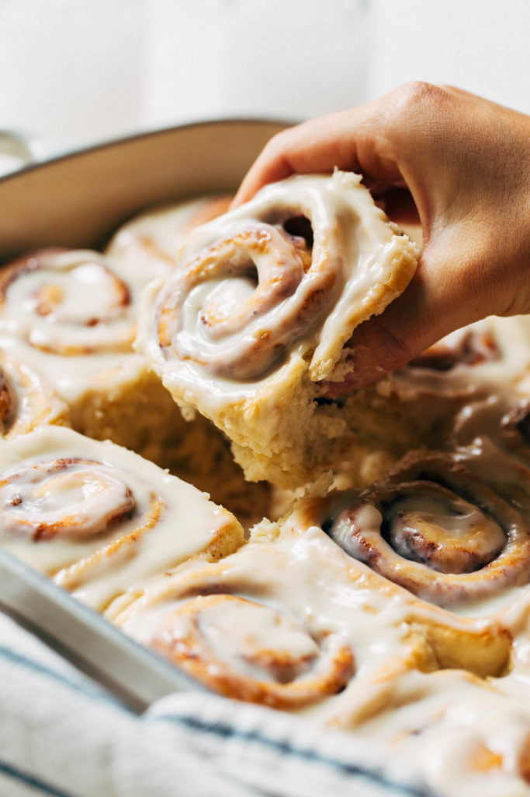

Cinnamon Rolls

These handmade cinnamon rolls are warm and ready in under 2 hours, require simple ingredients, and are made
completely by hand. So not only are the perfect for a special occasion, but these rolls can be enjoyed as a
quick breakfast treat at any time of year. In the end you’re left with soft and fluffy cinnamon rolls your whole
family will enjoy!
Ingredients
Dough:
- 4 1/2 – 5 cups all purpose flour
- 1/3 cup (75g) granulated sugar
- 2 packets Fleischmann’s® RapidRise® Yeast (about 4 1/2 tsp)
- 1 tsp salt
- 1 1/2 cups (355g) water
- 6 tbsp (85g) unsalted butter
- 1 large egg
Filling:
- 1/4 cup (55g) unsalted butter, room temp
- 1/2 cup (100g) light brown sugar, packed
- 1 tbsp cinnamon
Icing:
- 4 oz cream cheese, room temp
- 1/4 cup (55g) unsalted butter, room temp
- 1 cup (120g) powdered sugar
- 2 tsp vanilla extract
Steps
Dough:
- In a large mixing bowl, whisk together 2 cups flour, sugar, yeast, and salt.
- In a heat-safe bowl, combine the water and butter (cut into tablespoons). Heat in the microwave for 30
sec – 45 sec, until warm to the touch but not hot. The butter will not melt completely.
- Pour into the dry ingredients with the egg and mix with a wooden spoon.
- Add in 2 more cups of flour and mix. It should turn pretty thick and sticky at this point.
- Add in 1/2 cup of flour and mix again. It should now turn shaggy and become difficult to stir. Once it
reaches that point, set the spoon to the side and use your hands to mix and knead the dough.
- It will be sticky, so add another 1/4 cup of flour and continue to mix and knead by hand. It should turn
into a smooth mass that’s soft and tacky.
- With a clean finger, press it into the dough. If your finger is sticking, add another 1/4 cup of flour
and knead. If it’s not, then shape it into a ball and let it rest uncovered for 10 minutes.
- When the 10 minutes is up, the dough should have puffed up quite a bit but not quite doubled in size.
- Place the dough on a lightly floured surface and pat it into a rough rectangle shape. Roll it into a
10×15 inch rectangle using a rolling pin.
- Spread the room temperature butter into a thin and even layer, leaving about 1/2 inch border all around
the outside of the dough.
- Sprinkle with the brown sugar and spread it even with your hand. Then top it with the cinnamon.
- Working from the 15 inch end of the dough, roll it up into a log. Place your hands at each end of the
log and give it a gentle squeeze in to compact the log of dough. It may have stretched out a bit during
the rolling process so this brings it back together.
- For best results, use unflavored dental floss to cut the rolls. If you don’t have floss, you could also
use really thin sewing thread. If using a sharp knife, gently saw back and forth and try not to press
straight down into the rolls. This will squish them into an odd shape.
- Using the floss, slide it under the roll and toss both ends of the floss over top. Pull them through to
create a cut. Cut off the two ends of the log and then cut the remainder into 12 pieces.
- Cut the entire log in half, then cut those two halves in half to create 4 segments. Cut each of those 4
segments into 3 rolls to get a total of 12.
- Place the rolls in a buttered or greased 9×13 dish (you could also use two 9″ round pans, placing 6
rolls in each). It’s OK if all of the rolls are touching.
- Place in a warm spot and cover with a towel to rise for 1 hour. If you live in a colder climate, preheat
the oven to the lowest temperature. Once it’s ready, turn the oven off and place the rolls inside. This
creates a warm environment for the rolls to proof.
- Preheat the oven to 350F (first remove the rolls if you proofed them inside) and check on the rolls.
They should have doubled in size and now take up the entire dish.
- Bake for 25-30 minutes or until the tops are a light golden brown. While they cool, make the icing.
Icing
- Place the cream cheese and butter in a bowl and use a fork to mash the two together. Make sure they’re
both softened to room temperature, otherwise the icing will be lumpy.
- Add the powdered sugar and vanilla and mash again with the fork. Once the mixture starts to loosen,
switch to a whisk and mix until smooth.
- Spread onto the warm rolls and dig in!